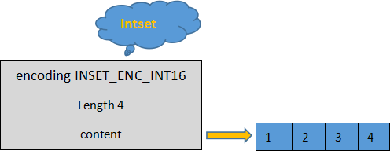

Redis set集合
Redis set （集合）遵循无序排列的规则，集合中的每一个成员（也就是元素，叫法不同而已）都是字符串类型，并且不可重复。Redis set 是通过哈希映射表实现的，所以它的添加、删除、查找操作的时间复杂度为 O(1)。集合中最多可容纳 2^32 - 1 个成员（40 多亿个）。
Redis set 使用以下方式向集合中添加一个成员，语法格式如下：
和其他数据类型一样，当集合中最后一个成员被删除时，存储成员所用的数据结构也会被自动删除。
集合有一个非常重要的特性就是“自动去重”，这使得它可以适用于许多场景，比如过滤掉已中奖用户的 id，保证该用户不会被第二次抽中。
底层存储结构，分别是 intset（整型数组）与 hash table（哈希表），当 set 存储的数据满足以下要求时，使用 intset 结构：
当不满足上述要求时，则使用 hash table 结构。
Redis 中 intset 的结构体定义如下：
intset 结构示意图如下所示：
查看更多命令：https://redis.io/commands
Redis set 使用以下方式向集合中添加一个成员，语法格式如下：
127.0.0.1:6379> SADD key member [member ...]
- key：指定一个键
- member：集合中要存储的成员。
和其他数据类型一样，当集合中最后一个成员被删除时，存储成员所用的数据结构也会被自动删除。
集合有一个非常重要的特性就是“自动去重”，这使得它可以适用于许多场景，比如过滤掉已中奖用户的 id，保证该用户不会被第二次抽中。
认识set集合
1) intset
Redis set 采用了两种方式相结合的底层存储结构，分别是 intset（整型数组）与 hash table（哈希表），当 set 存储的数据满足以下要求时，使用 intset 结构：
- 集合内保存的所有成员都是整数值；
- 集合内保存的成员数量不超过 512 个。
当不满足上述要求时，则使用 hash table 结构。
Redis 中 intset 的结构体定义如下：
typedf struct inset{
uint32_t encoding;//指定编码方式，默认为INSET_ENC_INT16
uint32_t length;//集合内成员的总个数
int8_t contents[];//实际存储成员的数组，并且数组中的数值从小到大依次排列
}inset;
- encoding：用来指定编码格式，共有三种，分别是 INTSET_ENC_INT16、INSET_ENC_INT32 和 INSET_ENC_INT64，它们对应不同的数值范围。Redis 为了尽可能地节省内存，它会根据插入数据的大小来选择不同的编码格式。
- length：集合内成员的数量，记录 contents 数组中共有多少个成员。
- contents：存储成员的数组，数组中的成员从小到大依次排列，且不允许重复。
intset 结构示意图如下所示：

在《Redis hash哈希散列（图解）》一节，我们已经对哈希表原理做了讲解， set 的哈希表与其相似，这里不再赘述。
命令汇总
| 命令 | 说明 |
|---|---|
| SADD key member1 [member2] | 向集合中添加一个或者多个元素，并且自动去重。 |
| SCARD key | 返回集合中元素的个数。 |
| SDIFF key1 [key2] | 求两个或多个集合的差集。 |
| SDIFFSTORE destination key1 [key2] | 求两个集合或多个集合的差集，并将结果保存到指定的集合中。 |
| SINTER key1 [key2] | 求两个或多个集合的交集。 |
| SINTERSTORE destination key1 [key2] | 求两个或多个集合的交集，并将结果保存到指定的集合中。 |
| SISMEMBER key member | 查看指定元素是否存在于集合中。 |
| SMEMBERS key | 查看集合中所有元素。 |
| SMOVE source destination member | 将集合中的元素移动到指定的集合中。 |
| SPOP key [count] | 弹出指定数量的元素。 |
| SRANDMEMBER key [count] | 随机从集合中返回指定数量的元素，默认返回 1个。 |
| SREM key member1 [member2] | 删除一个或者多个元素，若元素不存在则自动忽略。 |
| SUNION key1 [key2] | 求两个或者多个集合的并集。 |
| SUNIONSTORE destination key1 [key2] | 求两个或者多个集合的并集，并将结果保存到指定的集合中。 |
| SSCAN key cursor [match pattern] [count count] | 该命令用来迭代的集合中的元素。 |
命令演示
Redis 集合有特定的应用场景，比如用户的共同关注场景就可以使用 set 来实现。下面看一组示例，其中 user:1 与 user:2 代表两个用户，他们都关注了一些编程课程：#创建集合并添加多个成员 127.0.0.1:6379> SADD user:1 python java mysql (integer) 3 127.0.0.1:6379> SADD user:2 python c redis (integer) 3 #对两个集合求交集，求出他们共同关注的编程技术 127.0.0.1:6379> SINTER user:1 user:2 1) "python" #两个集合求并集 127.0.0.1:6379> SUNION user:1 user:2 1) "java" 2) "python" 3) "mysql" 4) "redis" 5) "c" #查看集合所有成员 127.0.0.1:6379> SMEMBERS user:1 1) "mysql" 2) "java" 3) "python" #两个集合求并集，并把结果保存到另外一个user:3集合中 127.0.0.1:6379> SUNIONSTORE user:3 user:1 user:2 (integer) 5 #查看集合所有成员 127.0.0.1:6379> SMEMBERS user:3 1) "java" 2) "python" 3) "mysql" 4) "redis" 5) "c" #从集合中弹出一个元素 127.0.0.1:6379> SPOP user:1 1 1) "python" #从集合中弹出两个元素 127.0.0.1:6379> SPOP user:1 2 1) "mysql" 2) "java" #查看集合元素个数 127.0.0.1:6379> SCARD user:2 (integer) 3 #迭代集合中元素 127.0.0.1:6379> SSCAN user:3 0 1) "0" 2) 1) "mysql" 2) "redis" 3) "java" 4) "python" 5) "c"在线练习工具：https://try.redis.io/
查看更多命令：https://redis.io/commands
关注公众号「站长严长生」，在手机上阅读所有教程，随时随地都能学习。内含一款搜索神器，免费下载全网书籍和视频。

微信扫码关注公众号